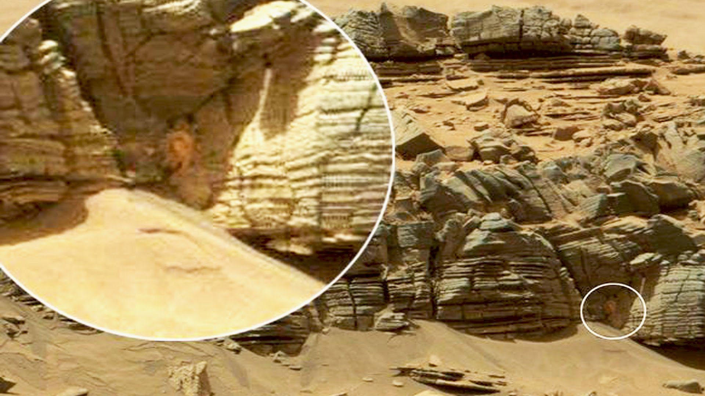
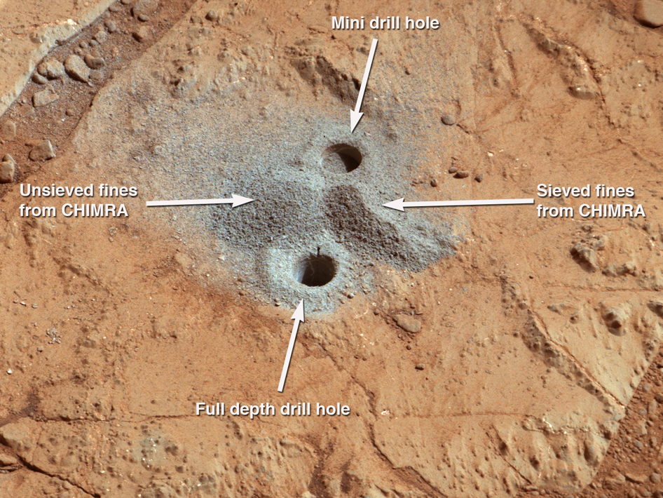

LIFE ON MARS
Image of speculated life on Mars.
Hole drilled to search for microbes during NASA mission
The possibility of life on Mars is a subject of significant interest to astrobiology due to the planet's proximity and similarities to Earth. To date no proof has been found of past or present life on Mars. However, cumulative evidence is now clear that during the ancient Noachian time period, the surface environment of Mars had liquid water and may have been habitable for microorganisms. The existence of habitable conditions does not necessarily indicate the presence of life.
Scientific searches for evidence of life began in the 19th century, and they continue today via telescopic investigations and deployed probes. While early work focused on phenomenology and bordered on fantasy, modern scientific inquiry has emphasized the search for water, chemical biosignatures in the soil and rocks at the planet's surface, and biomarker gases in the atmosphere.[1][2] On November 22, 2016, NASA reported finding a large amount of underground ice in the Utopia Planitia region of Mars. The volume of water detected has been estimated to be equivalent to the volume of water in Lake Superior.
Mars is of particular interest for the study of the origins of life because of its similarity to the early Earth. This is especially so since Mars has a cold climate and lacks plate tectonics or continental drift, so it has remained almost unchanged since the end of the Hesperian period. At least two thirds of Mars's surface is more than 3.5 billion years old, and Mars may thus hold the best record of the prebiotic conditions leading to abiogenesis, even if life does not or has never existed there.[6][7] In May 2017, evidence of the earliest known life on land on Earth may have been found in 3.48-billion-year-old geyserite and other related mineral deposits (often found around hot springs and geysers) uncovered in the Pilbara Craton of Western Australia.[8][9] These findings may be helpful in deciding where best to search for early signs of life on the planet Mars.